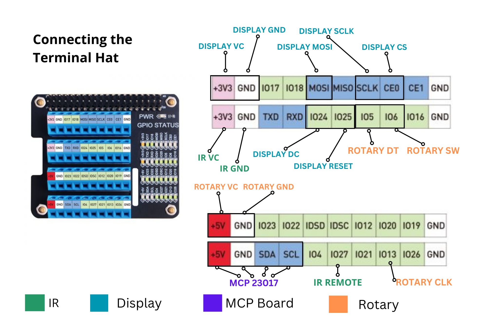

Most Quadify modules require power (VCC) and
ground (GND), with the exception of the buttons
themselves.
To keep things simple during the initial setup, this guide refers
to physical pin numbers on the Raspberry Pi header.
These pins are also known as GPIOs and can be numbered differently
in software, but we won’t go into that here.
Connecting the OLED screen
Refer to the wiring diagram above for pin locations
Connect the screen’s VCC and GND
to the Raspberry Pi’s 3.3V and GND pins
Important: Do not connect the screen to 5V.
Although some manufacturers state 5V compatibility, using 3.3V
significantly reduces the risk of damaging the display
Connect the remaining screen pins to the corresponding pin
numbers on the Raspberry Pi
Double-check all connections before applying power
Once everything is working correctly, hot glue can be used to
secure the wires more permanently — but only after testing.
Connecting the MCP23017 board
Refer to the wiring diagram for correct pin placement
Connect VCC and GND to the
Raspberry Pi’s 5V and GND pins
Connect SDA and SCL to the
corresponding Raspberry Pi GPIO pins
Ensure PA0–PA7 are connected to the LED lines
on your button/LED PCB
Ensure the buttons are connected to PB0–PB5
Connecting the rotary switch
Connect VCC and GND first
Connect DT, CLK, and
SW to individual Raspberry Pi pins
Ensure the pins are connected in the correct order
The Quadify software will not start if the rotary
switch is not connected correctly.
Using a Terminal HAT (recommended)

This is the recommended method, particularly if you are not
confident with soldering or plan to transport or ship units.
Power down the Raspberry Pi and disconnect all power
Carefully attach the IQaudio DAC to the Raspberry Pi GPIO header
Connect the ribbon cable to the DAC’s GPIO extension pins
Connect the other end of the ribbon cable to the Terminal HAT
Secure all components using screws or clips where provided
Ensure the ribbon cable is not twisted or under strain
Once complete, power can be restored. No software changes are
required when using a Terminal HAT.
Screen problems
Once connected, the screen should work out of the box. If you
experience issues, double-check wiring and power first.
A small number of screens were shipped with incorrect resistor
placement. If you suspect this is the case, please get in touch
via Discord for further guidance.